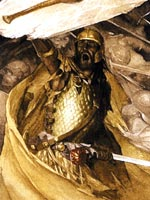

Прідері, в валлійській міфології син Пуйла, володаря Аннона, потойбічного світу, і нещасної красуні Рианнон. Придери був викрадений з колиски відкинутими претендентами на руку Рианнон і вихований вождем Теірнонам, який виявив немовляти в своїй стайні. Дружина вождя назвала дитину Гврі, "золоте волосся", але коли через сім років хлопчик повернувся до рідного дому, Рианнон дала йому ім'я Придери ( "турбота"), тому що в його відсутність життя її була сповнена турбот і тривог. Помилково звинувачена у вбивстві сина, вона повинна була сидіти біля воріт замку Пуйла і розповідати перехожим про своє уявний злочин, а потім переносити їх в покої чоловіка на власній спині.
Здавалося, чоловік і жінка були створені одне для одного, але злі чари, частина прокльони, насланої на Пуйла, щоб допомогти його супернику Гвавлу дістати руку Рианнон, затьмарили цей союз. Володіючи таким же терпінням, як і красою, Рианнон покірно зносила всі негаразди.
Після смерті Пуйла Придери успадкував його титул і зовсім не протестував проти весіллі матері і Манавідан, сина Лліра, валлійського бога моря. Під час весільного бенкету грянув грім, і все огорнулося туманом. "Жодна людина не бачив іншого, хоча залу була яскраво освітлена". Коли чарівний туман розсіявся, в замку не виявилося ні душі, а навколо нього простягалася пустельна земля. Люди, худобу і поля зникли.
Залишилися тільки Придери з дружиною Кігфой, Манавідан і Рианнон. Два роки вони харчувалися лише диким медом, рибою і дичиною. У зруйнованому замку Придери виявив золоту чашу, прикуту чотирма ланцюгами до мармуровій плиті. Юнак хотів підняти її, але несподівано його руки прилипли до чаші, і він раптом онімів. Рианнон спробувала виручити сина, але раптово вони разом зникли в поглинути їх чарівному тумані.
Згодом з'ясувалося, що всі ці події також були пов'язані з закляттям, накладеним на їх рід смертельним ворогом Пуйла, батька Придери. Таємницю розкрив Манавідан, коли збирався повісити одну з мишей, які знищили його урожай пшениці. Тварина опинилася дружиною Ллвіда, чарівника, заклятого ворога Пуйла. Знищувати посіви їй допомагали воїни чаклуна, перетворені в мишей. Придери, владика Діведа, вторгся в Гвінед, щоб помститися Гвідіону, що вкрав у нього свиню. Суперечка, як було в звичаї у кельтів, мало вирішитися на поєдинку, але сили супротивників виявилися нерівні, так як Гвидион насилав на Придери чарівні ілюзії.